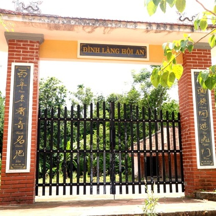
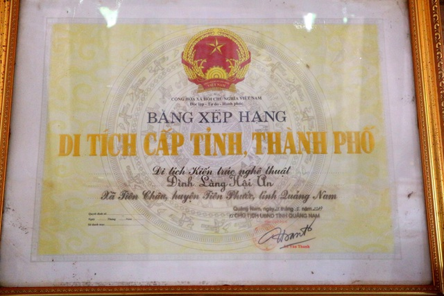

Khám phá đình làng cổ mang tên Hội An ở miền núi Quảng Nam
Cũng tên gọi Hội An như phố cổ ở Hội An nhưng Đình làng mang tên Hội An ở xã Tiên Châu (huyện Tiên Phước, Quảng Nam) lại đơn giản mộc mạc, với tường đá, lũy tre xanh hay những cây trái thơm ngọt đặc trưng, mái đình cổ và nụ cười chân quê.
Tiên Phước là huyện trung du bán sơn địa của tỉnh Quảng Nam. Đến với nơi đây, du khách sẽ bất ngờ vì cảnh núi non hùng vĩ, những khu đồi và ruộng bậc thang như ở Tây Bắc.
Khung cảnh bình yên, nên thơ với những thửa ruộng bậc thang bao bọc quanh Đình làng xinh xắn mang tên Hội An
Vừa có làng quê Bắc Bộ, sông suối Nam Trung Bộ lại có những miệt vườn cây trái tốt tươi như ở Nam Bộ nên Tiên Phước được ví như “Việt Nam thu nhỏ”, là vùng đất "tiên cảnh phước lộc", nơi "thập ngũ tiên sa".Ở xã Tiên Châu, huyện Tiên Phước nổi lên như một vùng lưu thủy hội tụ bởi nơi đây là điểm giao kết của nhiều con suối nhỏ. Thác Ồ Ồ ở Tiên Châu có chiều dài hơn 7km, hình thành từ 3 nhánh suối bắt nguồn từ các dãy núi Bằng Lim, Nổng Cườm và Cây Giấy, thác có 7 tầng, các bãi đá đẹp như tranh vẽ.
Đình làng Hội An có niên đại hơn 150 năm gắn liền với những bậc tiền hiền khai hoang dựng làng
Mùa nào trong năm, những con suối cũng róc rách nước chảy, hội lại thành những hồ nhỏ nước trong veo, nhìn sâu được xuống đáy. Mặt hồ phẳng lặng như tấm gương soi bóng mây trời.
Lưu thủy tụ hội đã khiến Tiên Châu trở nên xanh tốt. Ruộng bậc thang trải dài ôm lấy một ngôi làng cổ xinh xắn, đó là Đình làng Hội An.
Cũng tên là Hội An như phố cổ Hội An nhưng làng Hội An ở Tiên Châu đơn giản và mộc mạc bởi tường đá, tre xanh hay nụ cười tươi của những người chân quê và cả những ngôi nhà cổ.
Trải qua thăng trầm của thời gian cùng chiến tranh, hiện đình làng chỉ còn lại 2 kiến trúc chính là ngôi nhà tự Hiền và nhà kho
Đặc biệt, tại đây có một ngôi đình cổ là Đình làng Hội An có niên đại hơn 150 năm. Gắn liền với tên tuổi một nhân vật xuất chúng, người đã theo chân tiền hiền Nguyễn Phúc đến khai khẩn, sinh sống tại làng Hội An, đó là Phó bảng Nguyễn Đình Tựu (1828-1888).
Đình làng Hội An đã được xếp hạng di tích cấp tỉnh
Ban đầu, không gian của đình làng gồm 5 kiến trúc. Trải qua hàng chục năm dưới sự tác động của chiến tranh và điều kiện xã hội, các kiến trúc đình làng dần bị hư hại và phá bỏ.
Hiện nay, đình làng còn lại hai kiến trúc gồm: chính diện là ngôi nhà tự Hiền, kế bên trái là nhà kho nơi cất giữ vật dụng, tài sản của làng nhằm phục vụ cho việc cúng tế hằng năm (hai kiến trúc này hiện vẫn còn, tuy nhiên đang bị xuống cấp).
Thác Ồ Ồ ở Tiên Châu có chiều dài hơn 7km, hình thành từ 3 nhánh suối bắt nguồn từ các dãy núi Bằng Lim, Nổng Cườm và Cây Giấy, thác có 7 tầng, các bãi đá đẹp như tranh vẽ
Hơn 150 năm, Đình làng Hội An là nơi lưu giữ những bản sắc văn hóa đặc trưng của cư dân Tiên Phước xưa, là nơi người dân thể hiện lòng tri ân đối với các bậc tiền nhân, những người đã có công khai hoang lập làng trong thời kỳ “mở cõi” vùng đất Tiên Phước và cả những người có công với làng sau này.
Tại làng Hội An, còn nổi tiếng với nhiều loại trái cây hấp dẫn như trái bòn bon (đặc sản tiến Vua một thời), dâu đất, thanh trà… Hay những hàng cau xanh, những cây sưa cổ thụ… đem lại bóng mát và tô điểm thêm cho phong cảnh hữu tình nơi đây.